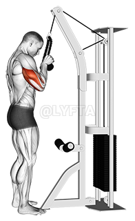

Esecuzione Push down con corda

Cosa è il push down con corda?
Il push down al cavo è un esercizio monoarticolare (one-arm o two-arm) finalizzato all'allenamento dei muscoli estensori dell'avambraccio sul braccio (tricipite brachiale ed anconeo), e che pertanto si basano sull'estensione del gomito (movimento che aumenta l'angolo tra avambraccio e braccio).
Nota: il capo lungo del tricipite partecipa anche ai movimenti di estensione e adduzione di spalla, e aiuta a mantenere centrata la testa dell'omero all'interno della cavità glenoidea.
L'uso del cavo conferisce a questa esecuzione la caratteristica di impostare una contrazione isotonica in tutto il range di movimento (ROM), senza quindi picchi di tensione o fasi passive.
Come eseguirlo in modo corretto?
Di seguito gli step fondamentali:
- Poniti frontalmente e alla giusta distanza dal cavo, che corrisponde più o meno alla lunghezza dell'omero in posizione di partenza (meno di mezzo metro). Ricorda che, se sei troppo vicino, durante l'esecuzione potresti entrare in contatto con il cavo. Se sei troppo lontano, la leva si sposta e il tricipite potrebbe perdere tensione nel momento di massima estensione.
- Scegli l'entità del sovraccarico in base alle rep. Sei dotato di una buona forza nei tricipiti ricorda che aumentando molto il peso avrai comunque certe difficoltà nella stabilizzazione posturale, le quali spesso portano a scomode rigidità della schiena e della cervicale.
- Tieni le gambe naturalmente divaricate, con le ginocchia non iper-estese, attiva i glutei ruotando leggermente il bacino in avanti, sostieni bene la schiena e mantieni le scapole in posizione neutra.
- Impugna la corda e parti con l'omero parallelo al torace e vicino al costato.
- Inspira ed esegui un movimento di distensione, portando l'avambraccio in linea con l'omero. Ricorda di non flettere / addure frontalmente l'omero e di non allontanarlo troppo dal busto, poiché ciò coinvolgerebbe il gran pettorale e alcuni muscoli della schiena e delle spalle.
- Torna quindi, espirando, in posizione di partenza con un movimento ben controllato. In passato si consigliava di far partire la rep dall'angolo retto tra avambraccio e omero, per non perdere la tensione sul muscolo. Questo non è in realtà necessario, perché il tricipite mantiene la tensione anche chiudendo ulteriormente l'angolo. L'importante, ribadiamo, è mantenere l'omero parallelo al corpo.